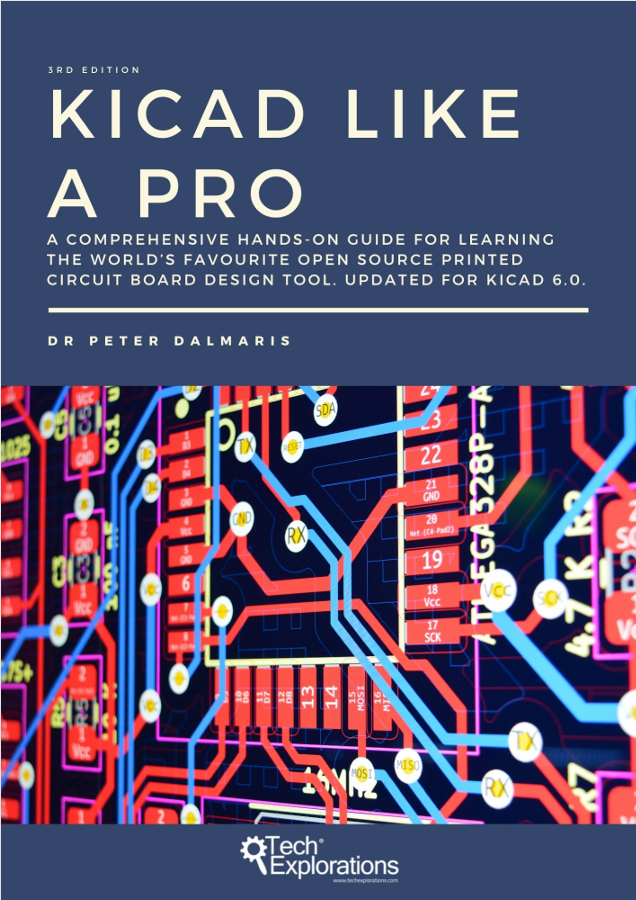

Thanks to KiCad Like a Pro by Dr. Peter Dalmaris, I was able to learn PCB design from the ground up through a hands-on, project-based approach. The book guided me step-by-step through five practical projects, teaching me everything from schematic design to layout, footprints, design rules, 3D modeling, and generating Gerber files. All the PCB projects shown on this page were created by following the exercises in that book. By completing each project, I not only built real hardware but also gained a solid understanding of the entire KiCad workflow. This experience helped me confidently design, visualize, and prepare my own PCBs for manufacturing.
